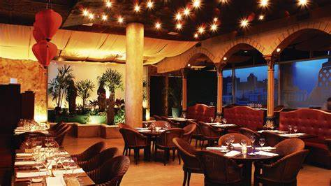
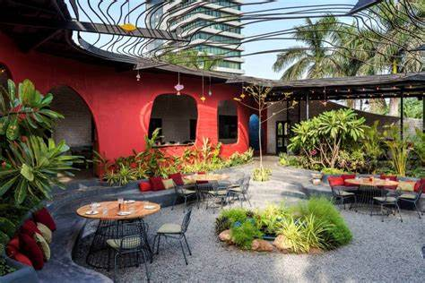

Diskon 10%
Diskon 10%
The Golden Fork
Pengalaman bersantap mewah dengan perpaduan hidangan Eropa dan Asia terfavorit di kawasan barat Jakarta.
 Diskon 13%
Diskon 13%
Urban Spice House
Pelopor sajian daging panggang berempah tebal dengan sentuhan saus bbq racikan chef berpengalaman.
 Diskon 15%
Diskon 15%
Laoban Kitchen
Kedai dimsum dan mie buatan tangan segar setiap hari dengan kuah kaldu rempah hangat menggugah selera.

Diskon 17%Xiao Oriental Bistro
Rice bowl ayam krispi saus mentega dan aneka camilan gurih yang pas disantap bersama teman kampus.

Diskon 21%Laixin Express House
Solusi santapan kilat saat mengejar deadline: burger jumbo, kentang krispi dan es teh manis jumbo.